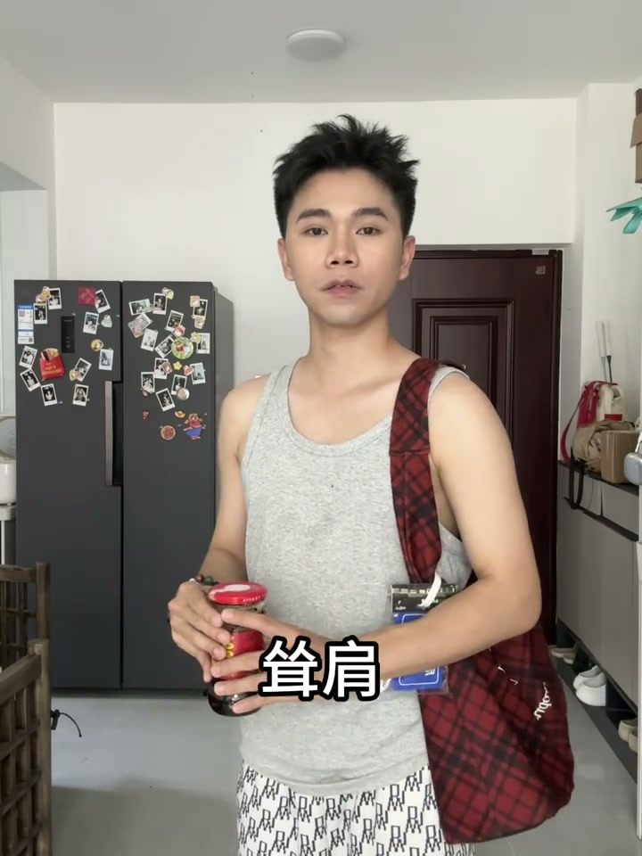
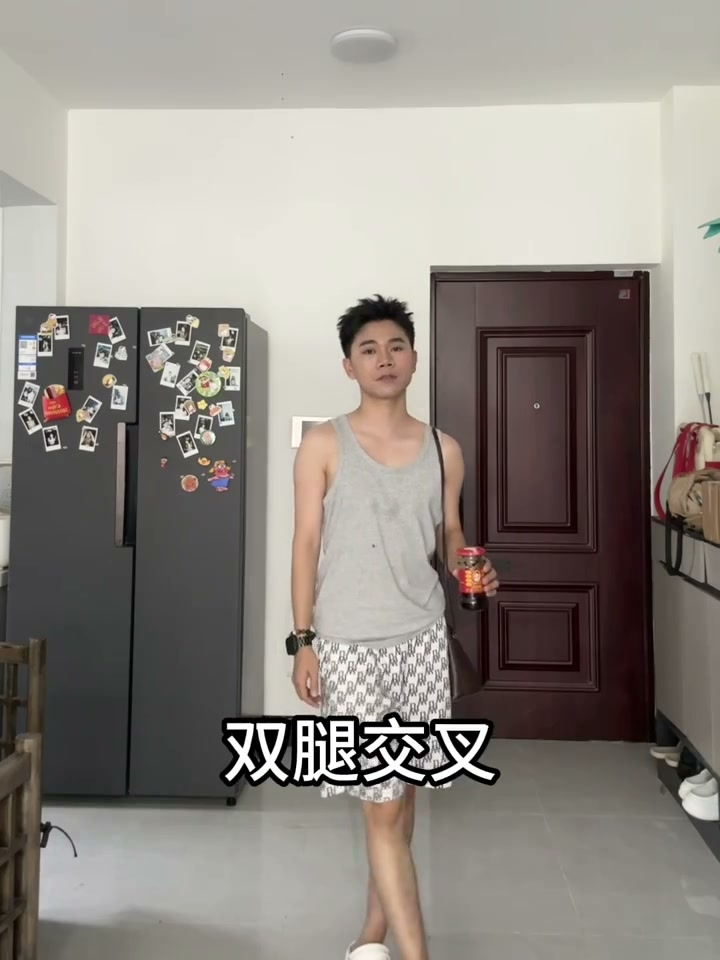
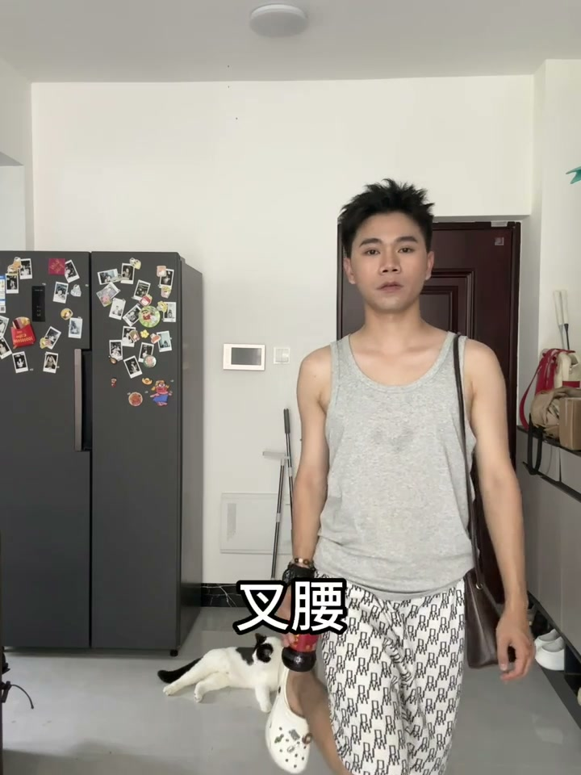
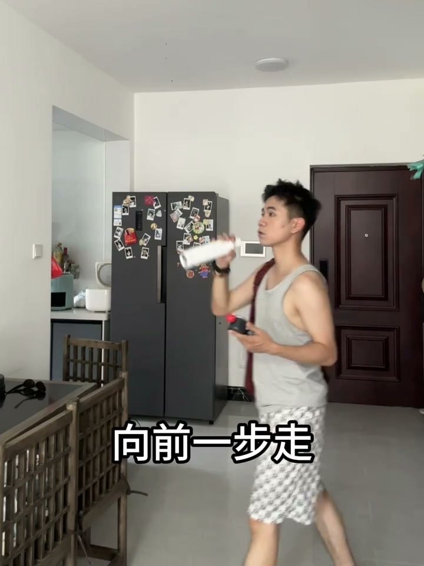

内容要点
四组用咖啡杯作为道具的外拍姿势，覆盖站、坐、走不同状态。
知识结构
[00:00→00:01]
站姿：拿咖啡+送肩+低头笑
手持咖啡杯，肩膀前送，低头微笑。送肩打破直立站姿，低头避免直视镜头，适合想拍出文艺感咖啡照的场景。
[00:03→00:04]
坐姿：交叉腿+捂脸笑
双腿交叉而坐，一手拿咖啡，另一手轻捂面部微笑。交叉腿拉长腿部线条，捂脸笑制造俏皮感。
[00:06→00:08]
站姿：抬脚+叉腰+侧脸
一只脚抬起，手叉腰，另一手拿咖啡，展示侧脸轮廓。抬脚增加动态感，侧脸让照片更有"不经意被拍到"的感觉。
[00:10→00:11]
动态：向前一步走
拿着咖啡向前迈步，制造走路抓拍的效果。这是最动态的一个姿势，适合放在组图最后一张。
核心结论
咖啡杯不是累赘是道具。四组姿势的共同公式：手拿咖啡固定→身体做其他变化（送肩/交叉腿/抬脚/走路），让咖啡成为构图中的定锚点。
图文实录
姿势一：站姿送肩低头
00:00 – 00:01
"拿咖啡，送肩，低头笑"。咖啡杯是双手自然下垂就有的道具，不需要刻意举起。肩膀往前送而不是后缩，制造出上身前倾的放松姿态。低头配合微笑，目光不接触镜头，适合文艺风外拍。

[00:01] 站姿：送肩打破直立感，低头微笑制造不经意氛围
Standing: pushing a shoulder forward breaks the rigid stance; a lowered-head smile makes it casual
姿势二：坐姿交叉腿捂脸
00:03 – 00:04
"手拿咖啡，双腿交叉，捂脸笑"。坐在台阶或椅子上的姿势。双腿交叉在视觉上拉长了腿部线条，尤其适合从上往下的俯拍角度。一只手半遮面部笑（捂脸/无脸笑），表情含蓄但可爱。

[00:04] 坐姿：交叉腿拉长比例，捂脸笑增加俏皮感
Seated: crossed legs lengthen proportions, a hand-covering laugh adds playfulness
姿势三：抬脚叉腰侧脸
00:06 – 00:08
"抬脚叉腰，手拿咖啡，展示侧脸"。一只脚离地抬起，手叉腰形成身体三角形，手持咖啡杯在画面中起到平衡作用。转头展示侧脸轮廓而不是看镜头，让照片更有"偷拍"的自然感。

[00:07] 抬脚叉腰：动态姿势+侧脸增加不经意的氛围感
Foot raised, hand on hip: a dynamic pose + profile adds a casual mood
姿势四：向前一步走
00:10 – 00:11
"向前一步走"——最简单的指令，但做出来效果最好。手持咖啡杯自然跨步，像走在街上被朋友叫住回头抓拍的一瞬间。这是四组中最动态、最自然的一个姿势。

[00:11] 向前一步走：动起来比站着不动更有故事感
Step forward: moving tells more of a story than standing still